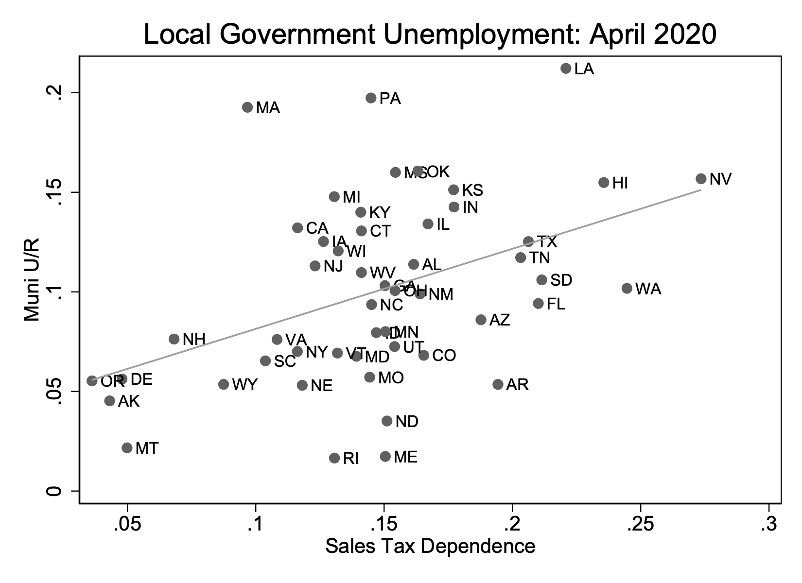

State and Local Government Employment in the COVID-19 Crisis (with Daniel Green) First version: July 2020 This version: August 2020 Download the paper
Abstract: Local governments are facing large losses in revenues and increased expenditures because of the COVID-19 crisis. We document a causal relationship between fiscal pressures induced by COVID-19 and the layoffs of state and local government workers. States that depend more on sales tax as a source of revenue laid off significantly more workers than other states. The CARES Act's provision of \$150 billion in aid to state and local governments reduced the fiscal pressures they faced. Exploiting a kink in the formula for allocation of funding across states, we estimate a state and local government employment multiplier for federal aid — each dollar of federal aid was used by states to support 31 cents of payrolls. State rainy day fund balances limit the sensitivity of employment to both revenue shocks, revealing that balanced budget requirements for state and local governments increase the procyclicality of public service provision.

Blog post for HBS Working Knowledge
Home